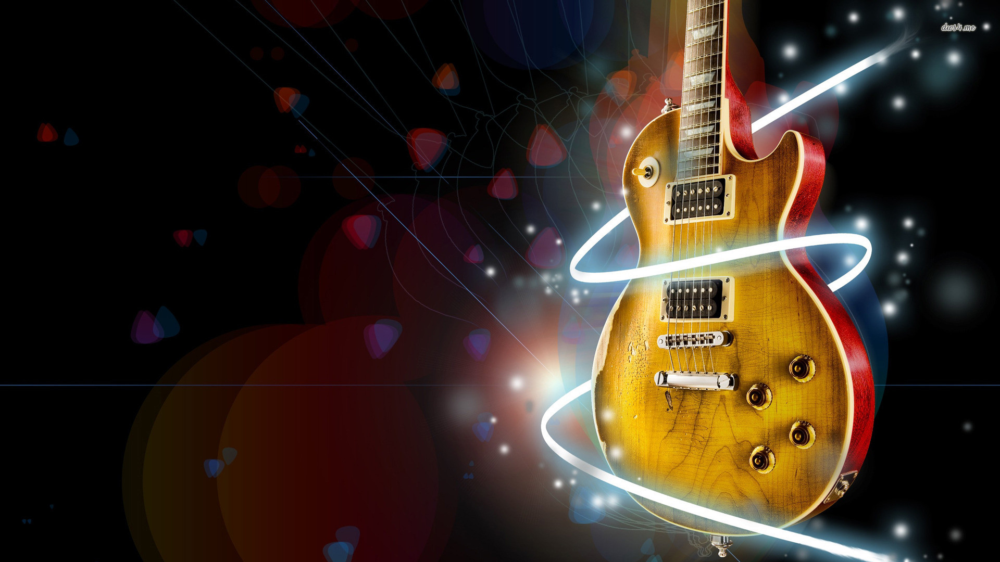

Jamais julguem ou deixem te julgar pelo seu gosto musical.
Podemos dizer que a “Música” é a arte de combinar os sons e o silêncio. Se pararmos para perceber os sons que estão a nossa volta, concluiremos que a música é parte integrante da nossa vida, ela é nossa criação quando cantamos, batucamos ou ligamos um rádio ou TV. Hoje a música se faz presente em todas as mídias, pois ela é uma linguagem de comunicação universal, é utilizada como forma de “sensibilizar” o outro para uma causa de terceiro, porém esta causa vai variar de acordo com a intenção de quem a pretende, seja ela para vender um produto, ajudar o próximo, para fins religiosos, para protestar, intensificar noticiário, etc. A música existe e sempre existiu como produção cultural, pois de acordo com estudos científicos, desde que o ser humano começou a se organizar em tribos primitivas pela África, a música era parte integrante do cotidiano dessas pessoas. Acredita-se que a música tenha surgido há 50.000 anos, onde as primeiras manifestações tenham sido feitas no continente africano, expandindo-se pelo mundo com o dispersar da raça humana pelo planeta. A música, ao ser produzida e/ou reproduzida, é influenciada diretamente pela organização sociocultural e econômica local, contando ainda com as características climáticas e o acesso tecnológico que envolvem toda a relação com a linguagem musical. A música possui a capacidade estética de traduzir os sentimentos, atitudes e valores culturais de um povo ou nação. A música é uma linguagem local e global.
